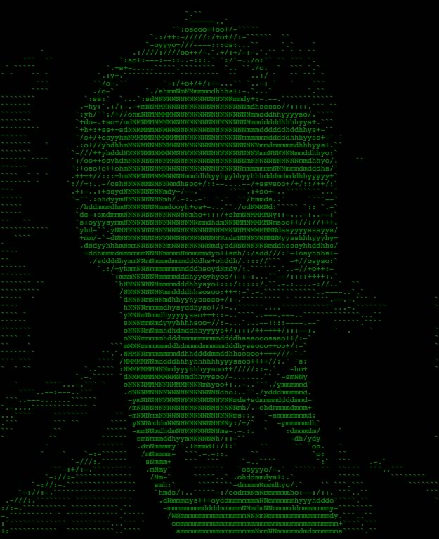

La Jauria 5 ya pasó al nivel 10 Más Info
 {% highlight js %} “Hay un principio bueno, que ha creado el orden, la luz y el hombre, y un principio malo, que ha creado el caos, las tinieblas y la mujer” ( Pitágoras, filósofo griego del siglo VI a.C). {% endhighlight %}Seminario contra el lenguaje inclusivo Más Info
{% highlight js %}
“Hay un principio bueno, que ha creado el orden, la luz y el hombre, y un principio malo, que ha creado el caos, las tinieblas y la mujer” ( Pitágoras, filósofo griego del siglo VI a.C).
{% endhighlight %}
La Jauria 4 pasó la prueba 2 Más Info
{% highlight js %} “Hay un principio bueno, que ha creado el orden, la luz y el hombre, y un principio malo, que ha creado el caos, las tinieblas y la mujer” ( Pitágoras, filósofo griego del siglo VI a.C). {% endhighlight %}La Jauria 6 no conesta el teléfono Más Info
{% highlight js %} “Hay un principio bueno, que ha creado el orden, la luz y el hombre, y un principio malo, que ha creado el caos, las tinieblas y la mujer” ( Pitágoras, filósofo griego del siglo VI a.C). {% endhighlight %}Chile es el país con más jugadores Más Info
{% highlight js %} “Hay un principio bueno, que ha creado el orden, la luz y el hombre, y un principio malo, que ha creado el caos, las tinieblas y la mujer” ( Pitágoras, filósofo griego del siglo VI a.C). {% endhighlight %}EEUU inicia investigación por el caso Mary FranklinMás Info
{% highlight js %} “Hay un principio bueno, que ha creado el orden, la luz y el hombre, y un principio malo, que ha creado el caos, las tinieblas y la mujer” ( Pitágoras, filósofo griego del siglo VI a.C). {% endhighlight %}Nueva Jauría en Asia Más Info
{% highlight js %} “Hay un principio bueno, que ha creado el orden, la luz y el hombre, y un principio malo, que ha creado el caos, las tinieblas y la mujer” ( Pitágoras, filósofo griego del siglo VI a.C). {% endhighlight %}Los nuevos hombres Más Info
 {% highlight js %}
“Hay un principio bueno, que ha creado el orden, la luz y el hombre, y un principio malo, que ha creado el caos, las tinieblas y la mujer” ( Pitágoras, filósofo griego del siglo VI a.C).
{% endhighlight %}
{% highlight js %}
“Hay un principio bueno, que ha creado el orden, la luz y el hombre, y un principio malo, que ha creado el caos, las tinieblas y la mujer” ( Pitágoras, filósofo griego del siglo VI a.C).
{% endhighlight %}
Gore Gore Gore!!!Más Info
{% highlight js %} “Hay un principio bueno, que ha creado el orden, la luz y el hombre, y un principio malo, que ha creado el caos, las tinieblas y la mujer” ( Pitágoras, filósofo griego del siglo VI a.C). {% endhighlight %}Imagenes NSFV Más Info
{% highlight js %} “Hay un principio bueno, que ha creado el orden, la luz y el hombre, y un principio malo, que ha creado el caos, las tinieblas y la mujer” ( Pitágoras, filósofo griego del siglo VI a.C). {% endhighlight %}Video Violación Más Info
{% highlight js %} “Hay un principio bueno, que ha creado el orden, la luz y el hombre, y un principio malo, que ha creado el caos, las tinieblas y la mujer” ( Pitágoras, filósofo griego del siglo VI a.C). {% endhighlight %}